Release 3.3 Copyright ©1995 by NeXT Computer, Inc. All Rights Reserved.
| 4 |
Creating a Database Project
| Organizing a Database Kit application, as with all applications in NEXTSTEP, starts with a visit to Project Builder. After you use Project Builder to prepare your project for the special needs of a Database Kit application, you then design the application's user interface with Interface Builder.
This chapter describes the things you can do in Project Builder and Interface Builder |
| Project Builder |
| The first thing you need to do is launch Project Builder and create a new project. Having accomplished this, you must prepare your project for its meeting with the Database Kit by: |
| Including the Database Kit library. | ||
| Forcing the loading of unreferenced symbols. | ||
| Incorporating model files. |
| The Database Kit Library
The Database Kit library contains the code that you need to make your database application work. To include the library in your project, double-click the Libraries suitcase in Project Builder's File Viewer, and select the file libdbkit_s.a in the Add Libraries panel. The Add Libraries panel automatically points to the /usr/lib directory, the default location for NEXTSTEP library files. This is where the Database Kit library is stored. Figure 34 shows the File Viewer and Add Libraries panel poised for including the Database Kit library. |
| 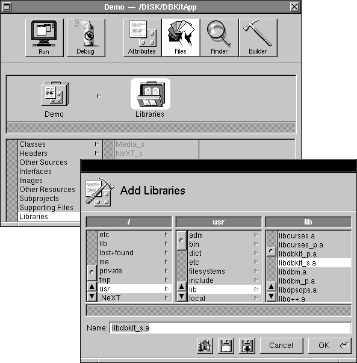 |
| Figure 34. Adding the Database Kit Library to your Project
In the File Viewer's list of libraries, the Database Kit library appears as dbkit_s, as shown in Figure 35. |
| 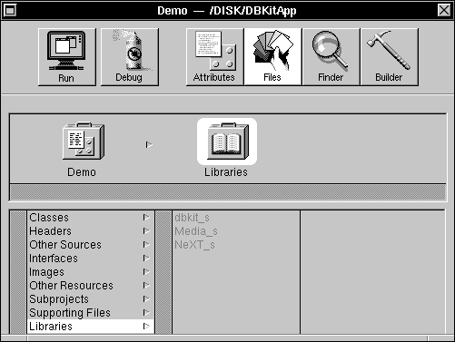 |
| Figure 35. The Database Kit Library in Project Builder's Library List
Loading Unreferenced Symbols The Database Kit dynamically loads the adaptor(s) that you need. The adaptor code may refer to symbols from the Database Kit library, but since these references aren't resolved when your application is being compiled, these symbols won't necessarily be loaded into your application's executable image. To rectify this, you need to force the loader to load all the symbols that the adaptor might refer to; this is done by adding the following line to your project's Makefile.preamble file: |
 OTHER_LDFLAGS = -u libdbkit_s -u libNeXT_s -u libsys_s
OTHER_LDFLAGS = -u libdbkit_s -u libNeXT_s -u libsys_s
| This line tells the loader to load all the symbols from the named libraries--even if they aren't referred to when the application is being compiled. When, in the course of your application's execution, an adaptor is dynamically loaded and used, the symbols that it needs are, thus, guaranteed to be present.
Model Files To incorporate a model file, whether in archive or ASCII format, you drag it into the Other Resources suitcase. You can incorporate as many models as you want; Figure 36 shows a project that has incorporated the Oracle and Sybase example models. |
| 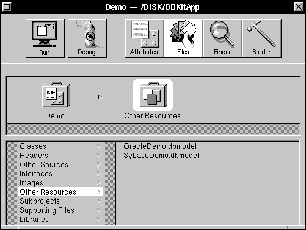 |
| Figure 36. Model Files in Project Builder
Double-clicking a model file entry in the Other Resources list opens the file in DBModeler. However, you should note that the changes that you make to a model may not be immediately recognized by your project's interface as presented through Interface Builder.
Model File Locations When you drag a model file into Project Builder, the file is copied into the project. Exactly where it's placed depends on the file's format: |
| Archive models are copied into the main bundle (the ".app" directory). | ||
| ASCII models are copied into the project directory (the directory immediately above the main bundle). |
| Only archive model files can be used in your (running) application, thus only archive format models are copied directly into the main bundle. However, when Project Builder builds your application, it creates, for each ASCII model that it finds in the project directory, an archive file that it stores in your project's main bundle.
Keep in mind that the models that are available to your application aren't limited to the files that you drag into your project. The model files stored in a Databases library (~/Library/Databases, /LocalLibrary/Databases, or /NextLibrary/Databases, if present) can also be used. |
| Interface Builder |
| The interface objects that are provided by the Database Kit for use in Interface Builder are manipulated in the same manner as standard Application Kit objects such as Button and Slider: You drag an object into a window and drop it on or connect it to some other object.
But even more than the standard objects, the Database Kit objects know about their neighbors and can create, configure, and connect a "background" layer of objects that provides the guts behind the interface skin. You can build a complete, working database application simply by manipulating the Database Kit interface objects. More remarkable still, most applications can actually form a connection to a server, and fetch and display data in Interface Builder's Test mode. Thus, not only do you not have to write a line of code to create a working database application, you never have to leave Interface Builder to see your application work. This capability has its limits--sophisticated applications won't be completely served by the functionality provided by Interface Builder. But any application can benefit by the extent to which the Database Kit and Interface Builder work together.
Installing the Database Kit Palette Database Kit interface objects are provided to Interface Builder through the Database Kit palette, /NextDeveloper/Palettes/DatabaseKit.palette. Because of its location (in the Palettes directory), the Database Kit palette is automatically loaded into Interface Builder, but it isn't installed in Interface Builder's Palettes Tool window. To install the palette, you double-click the palette's icon in the Palettes display of Interface Builder's Preferences panel. Figure 37 shows the Database Kit palette in the Preferences panel. |
| 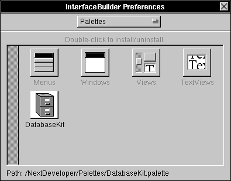 |
| Figure 37. The Palettes Display in Interface Builder's Preferences Panel
The installed Database Kit palette takes its place in the Palettes window, as shown in Figure 38.
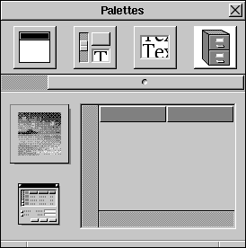 Figure 38. The Database Kit Palette in the Palettes Window
Palette Objects There are three objects in the Database Kit palette: DBTableView, DBImageView, and DBModule. Briefly, these objects perform the following functions within your interface: |
| DBTableView objects are used to display two-dimensional tables of data. | ||
| DBImageViews display images (one image at a time). | ||
| DBModules configure data-storing objects by reading database model files, and define action methods that fetch and save data. |
| The images that represent these objects are shown in Figure 39. |
| 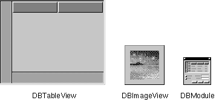 |
| Figure 39. Database Kit Palette Objects
Designing an Interface The following sections describe how to use the Database Kit palette objects, as well as the standard control objects, to create a user interface for a database application.
Incorporating a DBModule One of the first things you must do when designing a user interface is incorporate a DBModule object. You do this by dragging a DBModule object from the Database Kit palette and dropping it in the File window. When you incorporate a DBModule, the object shows up in the Objects display in the File Window. The first DBModule is given the name "DBModule"; subsequent objects are named "DBModuleN". An incorporated DBModule object is shown in Figure 40; for clarity, the object's name has been changed to "MyModule". |
| 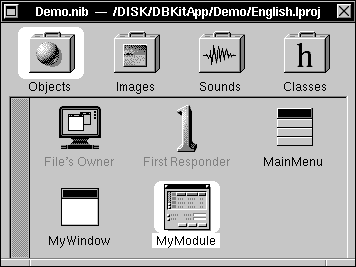 |
| Figure 40. A DBModule in the Objects Browser
The Model Browser A DBModule's initial role is to gain access to the database model browser. This browser, shown in Figure 41, appears when you double-click a DBModule icon in the Objects display. |
| 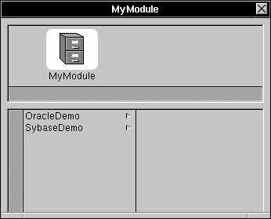 |
| Figure 41. The Model Browser
Each DBModule object has its own model browser; the name of the DBModule that owns a particular model browser is shown in the browser window's title bar. The DBModule icon and name are also shown in the browser's shelf; this shelf describes a model path (as defined in Chapter 2). The first column in the model browser displays the names of the available models. Specifically, these are the models that you dragged into your project's Other Resources suitcase (as explained earlier) as well as the model files found in the various Databases libraries. In considering model files, Interface Builder isn't constrained by the archive-only rule. The ASCII model files that you've dragged into your project will be presented for selection in the model browser, even if the models haven't yet been converted to archive format.
Selecting a Model When you select a model from the browser's first column, that model's (unhidden) entities are displayed in the browser's second column. Figure 42 demonstrates this using the OracleDemo model as an example. |
| 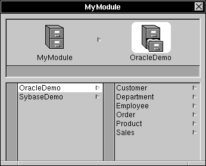 |
| Figure 42. Entities in the OracleDemo Model
Note that the model path displays, above the second column, a model icon and the name of the selected model.
Selecting an Entity When you select an entity, the browser's third column is filled with that entity's (unhidden) properties, and the model path is supplemented accordingly, as shown in Figure 43 (the browser window has been resized for clarity; this resizing doesn't happen automatically). |
| 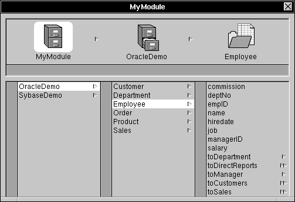 |
| Figure 43. Properties in the Employee Entity
The properties that are listed in the browser are a compilation of the entity's attributes and relationships. Relationships are distinguished by single or double arrowheads; attributes lack this mark. A single arrowhead denotes a to-one relationship; a double arrowhead identifies a to-many relationship.
Selecting a Property When you select a relationship in the browser, the relationship name is added to the model path, and the properties of the destination entity are displayed in the column beneath it. If the destination entity contains a relationship, selecting that relationship will add another column to the browser that displays the (nested) destination entity's properties. This relationship-traversal ends, and the model path is complete, when you select an attribute. A complete model path is shown in Figure 44 (the model browser is limited to four columns of display; the model column has been scrolled out of bounds). Note that the relationship (toDepartment) is represented by an entity icon. |
| 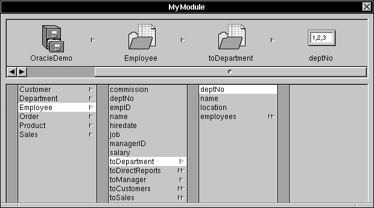 |
| Figure 44. A Complete Model Path
Data Type Icons The data type of the selected attribute is indicated by the icon that's displayed at the end of the model path. The correspondences between icons and data types is given in Figure 45. |
| Figure 45. Attribute Data Type Icons
Configuring a DBTableView DBTableView provides a two-dimensional table that can be filled with data from a database server. By default, a DBTableView object is oriented such that each (vertical) column presents the data for a particular attribute, and each (horizontal) row gives a single record. Figure 46 shows a DBTableView that's filled with employee data. |
| 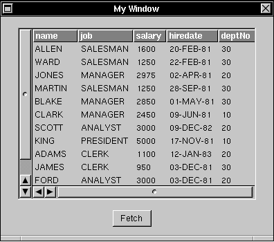 |
| Figure 46. A DBTableView Filled with Data
Configuring a DBTableView is mostly a matter of deciding what data you want it to display and then creating a correspondence, or association, between a column in the DBTableView and an attribute in a model that represents the chosen data. The following steps describe this process, using the employee table shown above as the goal.
Step 1: Get a DBTableView The first thing you need to do is drag a DBTableView object from the Database Kit palette and drop it into a window. A freshly incorporated DBTableView has two columns and enough room for about six records. Figure 47 shows a DBTableView that has been resized (enlarged) from the default. Additional columns are added automatically as they're needed. |
| 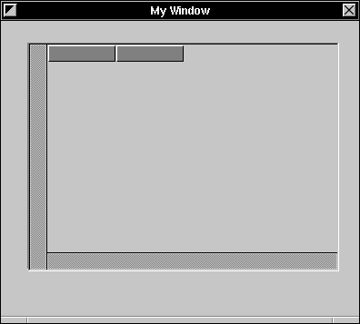 |
| Figure 47. A Freshly Resized DBTableView
Step 2: Find an Attribute Now you need to find an attribute that you want to display. To do this you drag out a DBModule, open its model browser, and create a model path to the attribute. Figure 48 shows a model browser with a model path that ends at the Employee.name attribute. |
| 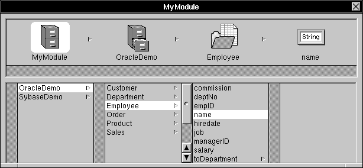 |
| Figure 48. The Employee.name Attribute in a Model Browser
Step 3: Drag the Attribute into the DBTableView To associate an attribute in a model browser with a column in a DBTableView, you drag the attribute's icon into the DBTableView and drop it on a column. Figure 49 shows the DBTableView before and after the Employee.name attribute is dropped into a column. Notice that the attribute's name is automatically used as the column's title. |
| 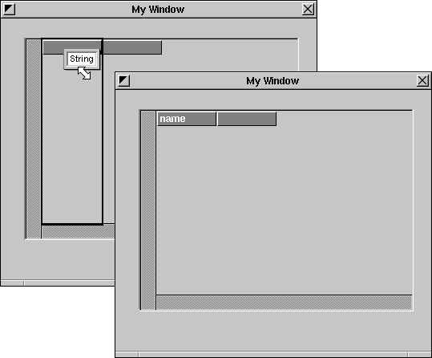 |
| Figure 49. Before and After Dropping the Employee.name Attribute
Step 4: Get More Attributes To finish configuring the DBTableView, you simply repeat steps 2 and 3, selecting and dropping attributes until you're satisfied. However, once you've formed that first association--in other words, after you drop an attribute into an interface object--the DBModule restricts your attribute choices by "locking" the model browser on the entity of that first attribute. Figure 50 shows the model browser for MyModule after it's been locked.
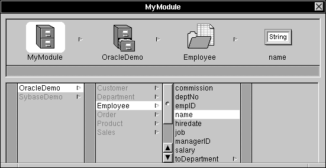 Figure 50. A "Locked" Model Browser
In a locked model browser the model and entity selections can't be changed, as indicated by the disabled items in the model and entity columns. The model paths to all subsequent attribute selections must start with the locked entity--this is called the DBModule's Figure 51 shows the fully-attributed employee table. All five attributes are direct properties of the root entity, Employee. The columns' widths have been resized to fit the expected data. |
| 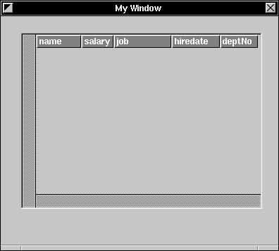 |
| Figure 51. The Fully-Configured Employee Table
Fetching Data Configuring a DBTableView primes it for displaying data, but it say nothing of how the data is gotten from the server. For this you need to add a control object that, when prompted, will send a data-fetching message to the DBModule. In Figure 52, a button, titled "Fetch", has been added to the window. The button is connected to the DBModule through the usual methodology for connecting a control: You Control-drag from the control object to the DBModule, and then select an action method in the Connections Inspector. As shown in the figure, the DBModule method that causes data to be fetched is called fetchAllRecords:. Note: DBModule's action methods are described in the section "Controlling a DBModule," later in this chapter. The data-fetching method that's used here is provided simply to complete the current example. |
| 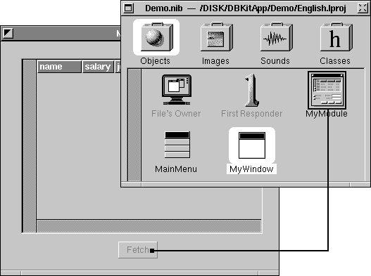 |
| Figure 52. Connecting a Button to the DBModule
When the Fetch button is clicked, the appropriate data will be fetched and displayed in the DBTableView.
Testing the Interface Now comes the amazing part. When you test the interface (through the Test Interface menu command), actual data is fetched from the server and displayed in the DBTableView. This action means that a connection to the server must be formed. If the adaptor that represents the server requires login information, it will display its login panel the first time the connection is attempted. Subsequent transactions with the same server should then proceed without the login panel's intercession. The table shown in Figure 46, earlier in this chapter, shows the DBTableView filled with data that was fetched in Interface Builder's test mode.
Joining Tables in a DBTableView The example above showed a DBTableView that displayed data for attributes from a single entity. By traversing to-one relationships, you can associate attributes from any number of entities with columns in the same DBTableView. In other words, a DBTableView can show the result of a join (as the term is defined in Chapter 2). Returning to the example, the Employee entity contains the to-one relationships toDepartment and toManager. The toManager relationship is reflexive--the destination is the Employee entity--so the toDepartment relationship is also a property of Employee.toManager. The Entity-Relationship model for this (excluding unnecessary information) is shown in Figure 53. |
| 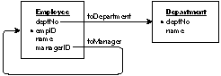 |
| Figure 53. Model for a Join
Because the relationships shown here are to-one, the records that are obtained through them can be joined and then displayed in the same DBTableView. To do this, you use DBModule's model browser to find the attributes you want, and then associate these attributes with columns in the DBTableView through the drag-and-drop technique previously described. In Figure 54, each column in the DBTableView displays data that's obtained through a different path; the associations between attributes and columns are indicated. |
| 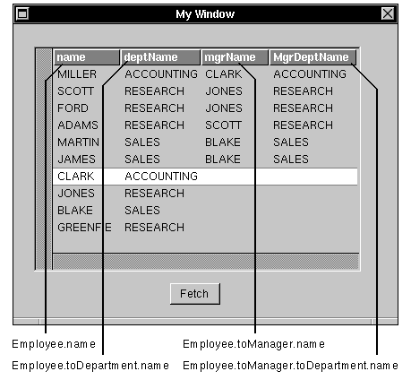 |
| Figure 54. Joined Records
Obviously, the column titles have been modified (otherwise, they would all be called "name"). To select the text in a column's title, you triple-click on it. Having selected the text, you can then edit it.
Joins and Read-Only Data The data that's fetched through a join is always read-only. In the table shown above, only the "name" column holds data that can be edited.
Creating a Master-Detail Interface A master-detail presentation is a way of realizing a to-many relationship. In this technique, the master table holds records for the source of the relationship; the detail table contains records for the destination. As individual records in the master table are selected, the contents of the detail table changes to show the records that correspond to the selection in the master.
A Simple Example Referring to MyModule's model browser, we see that the Employee entity contains the to-many relationship toCustomers, as shown in Figure 55. |
| 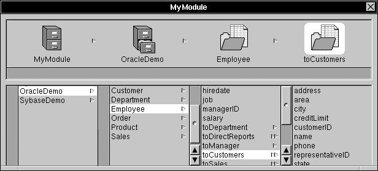 |
| Figure 55. A To-Many Relationship in the Model Browser
This relationship means that a single employee may be responsible for any number of customers. To realize this relationship, you need two DBTableViews: Employee information is displayed in one table (the master) and customer information in the other (the detail). To create the associations, you simply drag attributes from the Employee entity into the columns of the master DBTableView, and drag attributes from the destination of the Employee.toCustomers relationship into the columns of the detail. Either or both of the DBTableViews can present the result of a join. Figure 56 shows an appropriately configured master-detail interface. Notice that the deptName column in the Employees table is associated with an attribute that's obtained through a join (in other words, through the to-one relationship Employee.toDepartment). |
| 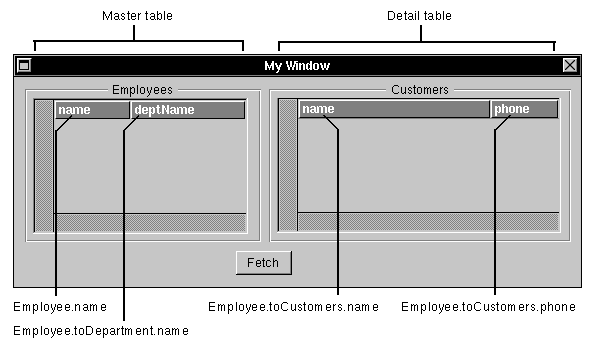 |
| Figure 56. Master-Detail Tables
When the Fetch button is clicked, the two tables are filled with data. As the user selects records in the Employees table, the appropriate customer records are displayed in the Customers table. Figure 57 and Figure 58 show the master-detail interface in action. |
| 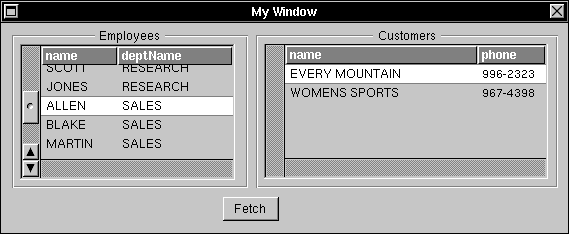 |
| Figure 57. Master-Detail in Action; Part 1 |
| 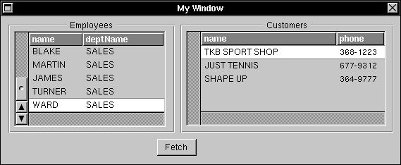 |
| Figure 58. Master-Detail in Action; Part 2
Nested Master-Detail Tables Master-detail tables can be nested such that a single DBTableView acts as the detail table in one relationship and the master in another. To create this type of interface, you simply drag out another DBTableView and add the appropriate attributes--in other words, you configure the second master-detail pair just as you configured the first. Looking at the example, the destination of the Employees.toCustomers relationship contains a to-many relationship named toOrders. Put naturally, the relationship means that each customer can have more than one order at a time. By associating attributes from the destination of the Employees.toCustomers.toOrders relationship with the columns of a third DBTableView, you create a nested master-detail interface. Just as the selection in the Employees table determines the contents of the Customers table, the selection in the Customers table determines the contents of the Orders table. The interface, filled with data, is shown in Figure 59. |
| 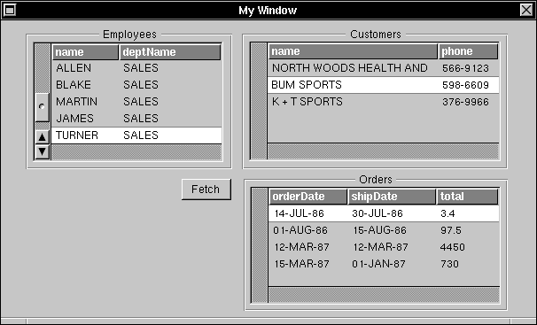 |
| Figure 59. Nested Master-Detail Tables
Controlling a DBModule As demonstrated in the examples above, a DBModule object can be set as the target of a Control object. The action methods that the DBModule class offers in its role as a target fall into two groups, data control and record control: |
| Data control methods synchronize the data that's displayed in the interface with the data that's stored in the database server. | ||
| Record control methods act on individual records. For example, there are methods for selecting, adding, and deleting records. |
| Note: There's yet another action method, takeValueFrom:, that doesn't fit into either of these categories. This is a special method that helps coordinate value synchronization between interface objects and is described in a later section.
The action methods are listed by group and described in sections below. But before you can appreciate how these methods works, you first must understand something of the scope of their activity, as explained in the next section.
Fetch Groups A DBModule organizes the attributes for which it fetches data into fetch groups, such that all the attributes within a particular fetch group are joined to the same entity. Put another way, the model paths that locate a fetch group's attributes can't traverse to-many relationships. Referring to the nested master-detail example described above, we see that there must be three fetch groups, one for each table of displayed data. Figure 60 shows the model for the master-detail example with the fetch groups outlined and (arbitrarily) labeled. |
| 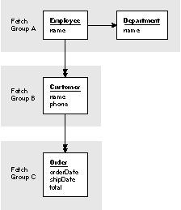 |
| Figure 60. Fetch Groups for a Master-Detail Interface
The fetch group that contains the root entity--"Fetch Group A" in the illustration--is special; it's called the root fetch group. It's special in that the DBModule action methods are directed to it. The other two fetch groups are called sub-fetch groups. They receive action messages only if the root fetch group forwards them. And the root fetch group only forwards data control messages, not record control messages. The scope of DBModule's action methods can be summarized as shown in the table below: |
| Method Group | Scope | |
| data control | root and sub-fetch groups | |
| record control | root fetch group only |
| Data Control Methods
The data control methods synchronize the data that's displayed in the interface with the data that's stored in the database server: |
| fetchAllRecords: fetches data from the server and displays it in the interface. | ||
| saveChanges: writes modified records back to the server. | ||
| discardChanges: throws away changes since the previous saveChanges: message. |
| Because data control messages are forwarded by the root fetch group, all fetch groups owned by a particular DBModule are affected by them. This was demonstrated in the master-detail examples: The Fetch button fetched data not only for the root fetch group (as displayed in the Employees DBTableView), but also for the other fetch groups (as displayed in the Customers and Orders tables).
Record Control Methods The record control methods act on individual records in the root fetch group (only): |
| appendNewRecord: adds a new record to the end of the list of records. | ||
| insertNewRecord: adds a new record just after the currently selected record. | ||
| deleteRecord: removes the currently selected record. | ||
| nextRecord: bumps the current selection cursor to the next record. | ||
| previousRecord: moves the selection cursor back a record. |
| The record-adding and -deleting methods are useful and necessary. The record-selection methods are less so: If the user is given a DBTableView, the selection can be made directly (by clicking in the table with the mouse), and so the selection methods aren't needed. The record-selection methods are important if you're a using standard interface object, such as TextField. However, it should be noted that completely forgoing DBTableView objects in deference to the standard interface objects is strongly discouraged.
That the record control methods only affect the root fetch group raises an obvious question: How does one create an interface in which records can be added to and deleted from a sub-fetch group? The simple answer is this: You assign a separate DBModule to each fetch group. This technique is described in the following section.
Multiple DBModules Most database applications will need to use more than one DBModule. This need is felt in two cases: |
| The DBModule control methods, as described above, only affect the root fetch group. To adequately control a sub-fetch group, you need a DBModule that will "adopt" it as its own root fetch group. An example of this is given below. | ||
| A single DBModule can't span models: You need (at least) one DBModule for each model that you use. |
| The latter case is much less common than the former. It's anticipated that most applications will use a single model. This places the burden of sufficient architectural representation on the model design, but, after all, that's what model building is all about. In any case, the mechanics of creating a multiple-DBModule interface to support multiple models is straightforward: You simply repeat the processes described above.
Connecting DBModules: A Better Master-Detail Returning to the master-detail examples described in the section "Creating a Master-Detail Interface," you'll notice that the only control that's added to the interface is a button that fetches data. The action method to which the button is connected, fetchAllRecords:, is a data control method, thus it affects all the fetch groups that belong to the DBModule. If a record control method--appendNewRecord:, for example--is connected to a button in the interface, the action would only affect the table that's displaying root fetch group data; in other words, it would affect the master table, but nothing else. So how do you add records to a detail table? By creating a second DBModule whose root entity is the basis of the detail table, and connecting this second DBModule to the first. The following sections examine this process, step-by-step.
Step 1: Configure the Interface First, we'll create the interface. Figure 61 shows the two DBTableViews, labeled "Master" and "Detail" for clarity, and three buttons, which are also descriptively titled. |
| 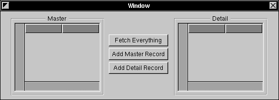 |
| Figure 61. Master-Detail Interface
Step 2: Configure the Master Table Configuring the Master table is done in the expected manner: A DBModule object is instantiated, a model and root entity are selected, and attributes from the root entity (or through to-one relationships) are dropped into Master's columns. Figure 62 shows a Model browser (for a DBModule named "MasterModel") and the associations between attributes and columns. In it, we see that MasterModel's root entity is Employee (from the "OracleDemo" model), and the Master table displays data for the Employee.name and Employee.toDepartment.deptNo attributes. |
| 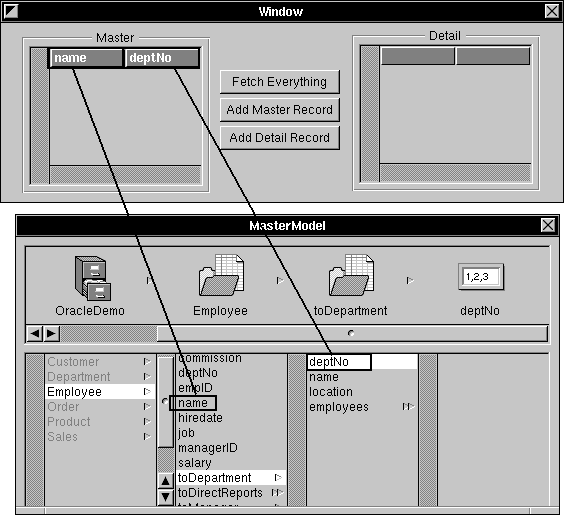 |
| Figure 62. Master Table Configuration
Step 3: Associate the Master DBModule with the Detail DBModule Next, you drag out a second DBModule (it's named "DetailModel" in the illustration below) and associate it with the first DBModule. To form this association, you drag a relationship icon out of the MasterModel model browser and drop it onto the DetailModel's object icon, as shown in Figure 63 and Figure 64.
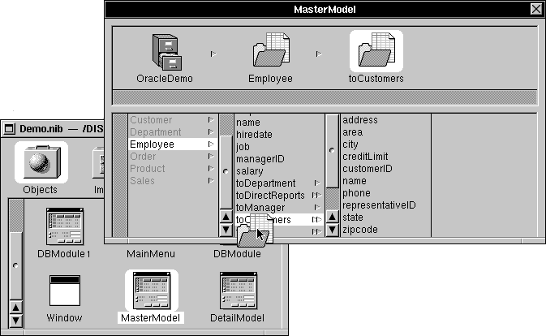 Figure 63. Drag a Relationship From the Master Model Browser... |
| 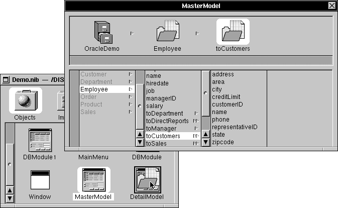 |
| Figure 64. ...and Drop It into the DetailModel Icon
Associating two DBModules in this manner implicitly sets the target DBModule's root entity to be the destination entity of the selected relationship. Thus, in the example, DetailModel's root entity is set to Customer.
Step 4: Configure the Detail Table Now you can select attributes from DetailModel's model browser and drop them into the Detail table. |
| Warning: | You should note that even though you implicitly declared the root entity for the DetailModel by dragging the toCustomers relationship into the object's icon, the assignment isn't reflected in DetailModel's Model browser--the Customer entity isn't "locked" until you actually select an attribute from the entity and drop it in an interface object. | |
| Step 5: Connect the Controls | ||
| By connecting the three buttons to the appropriate action methods you complete the interface: |
| The Fetch Everything button is connected to MasterModel's fetchAllRecords: method. | ||
| Add Master Record is connected to MasterModel's appendRecord:. | ||
| Add Detail Record is connected to DetailModel's appendRecord:. |
| When you click the Fetch Everything button, records for both tables are fetched. The two record-adding buttons work only for their respective tables.
Using a DBImageView Connecting an attribute to a DBImageView object is much like the process described above: You find an attribute in the model browser, drag it out, and drop it over the DBImageView object in your interface. However, the only attributes that a DBImageView accepts are those that represent NXImage objects. The icon for NXImage objects, as displayed in the model browser, is shown below: |
| 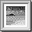 |
| Figure 65. The NXImage Icon
Using the Standard Interface Objects In addition to the objects defined in its palette, the Database Kit knows how to display data in most of the standard interface objects, objects such as TextField and NXBrowser. The following sections described the considerations that the standard objects add to a database application interface.
Incorporating a Standard Object The process through which a standard object is connected to a DBModule is the same as with the palette objects: You open a model browser, drag out an attribute, and drop it in the interface object. Figure 66 shows the Employee.name attribute being dragged into a Form object. |
| 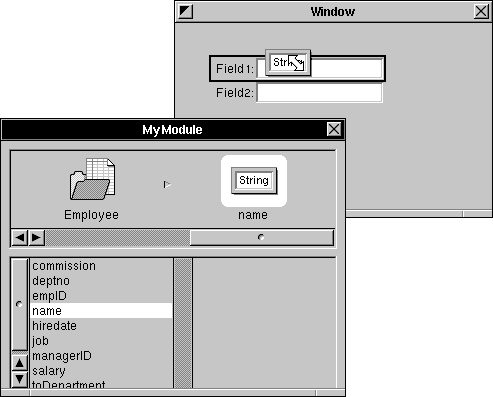 |
| Figure 66. Dragging into a Form Object
Although you can create an entire interface with the standard objects, this practice is strongly discouraged. In general, the standard objects should be used in conjunction with a DBTableView, where the DBTableView provides a browser on the data, and the standard objects display values for the current selection. Figure 67 gives an example of a DBTableView and a Form object that work together. |
| 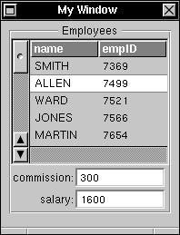 |
| Figure 67. A DBTableView and a Form
The attributes that are associated with the columns in the DBTableView and the cells in the Form object are from the same fetch group (they're all attributes of the Employee entity). As the user selects records in the DBTableView, the data for that record is displayed in the Form's cells. How does the Form know what to display? In other words, how does it know when the selected record changes? It just does; the act of creating the associations between attributes from the same fetch group and interface objects is enough to "link" the objects so they all display the appropriate data.
Getting Data Out of a Standard Object Let's modify the previous example a bit: The DBTableView, as shown in Figure 68 is extended to display all four attributes. Now, the two interface objects will share the commission and salary attributes. |
| 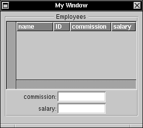 |
| Figure 68. A DBTableView and a Form; Part 2
Assume that the DBTableView is designated as read-only, while the values in the Form can be changed. In other words, this interface lets the user change the commission and salary values for a selected employee record. After a fetch, the data in the DBTableView and in the Form is in synch; the commission and salary columns in the DBTableView show the same respective values as in the Form. To maintain this synchronization when the user alters a Form value, we'll want the new data to be "sent back" to the DBTableView. This resynchronization isn't automatic, however: To link the data in a standard interface object back to a DBTableView, the standard object must send a takeValueFrom: message to the DBModule. The connection for the example is illustrated in Figure 69. |
| 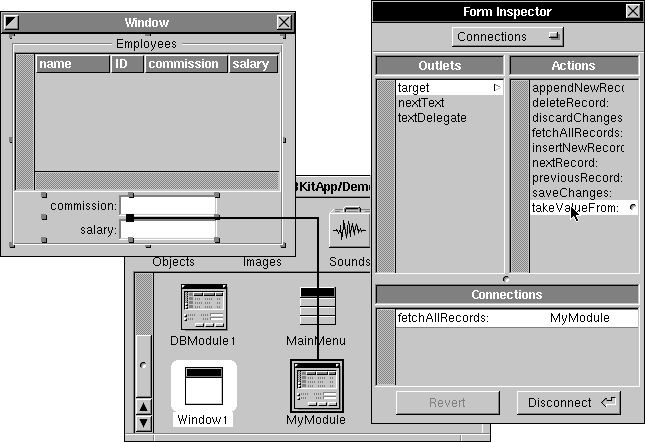 |
| Figure 69. The takeValueFrom: Connection
Thus connected, the user can enter a new value in the Form and, after the object accepts the value, the DBTableView will display the new data. Figure 70 shows the interface just after the user has entered a new salary value for ALLEN, and just after the value is validated (after the user presses the return or tab key). |
| 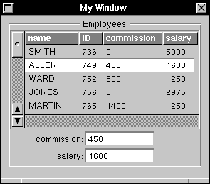 |
| Figure 70. Entering and Confirming a New Value
Scope When the DBModule receives the takeValueFrom: method, it figures out which attribute the sender is associated with, looks for other objects that are also associated with that attribute, and sends the located objects messages that cause them to update their values. Thus, there's never any confusion over which object gets updated--the correspondence is determined, by the DBModule, through identical attribute associations. However, as defined earlier, two attributes are identical only if their model paths are the same, including the model and DBModule portions of the path. This means that the scope of a takeValueFrom: message is restricted to DBModule boundaries.
Controls It was taken for granted, in the example above, that the Form object could be connected to the DBModule and so invoke the takeValueFrom: method. Of course, this is possible only because Form is a subclass of Control--only Controls can invoke action methods. You should find that most of the standard interface objects that "fit" with your database application interface are Controls; if you use an object that isn't a Control, then you might be able to display data with it, but you won't be able to resynchronize its values with those displayed. |